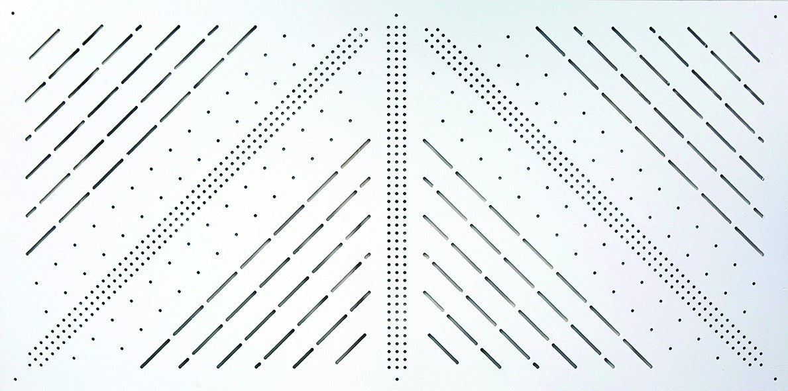
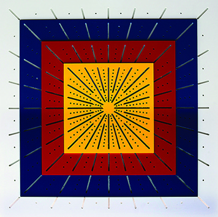
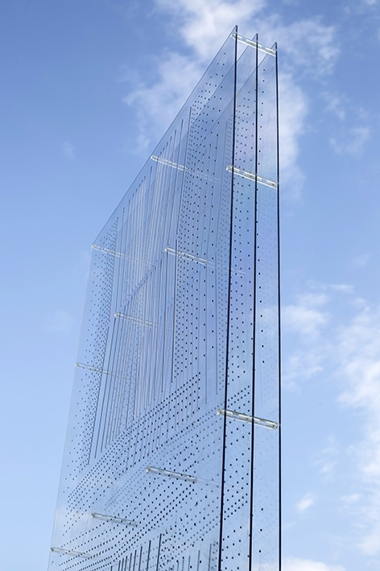
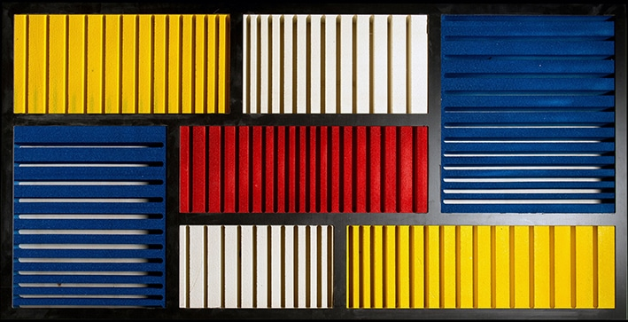

Acustica
Produciamo pannelli fonoassorbenti a risonanza di cavità
Sono particolari tipologie di strumenti acustici in grado di selezionare le frequenze da assorbire. Realizzati secondo uno schema geometrico adattato alle varie frequenze, funzionano secondo il sistema del Risonatore di Helmholtz unitamente al principio del pannello vibrante. L’elevato coefficiente di assorbimento “α” è raggiunto grazie alla versatilità di progettazione che, pur mantenendo costante il disegno, ne varia i parametri specifici: diametri dei fori e delle cave, la loro distanza, lo spessore del pannello, il plenum, ecc. Per ogni tipologia di ambiente progettiamo un pannello specifico, con le massime caratteristiche performanti. La scelta accurata dei materiali unita alla singolarità del design, fanno dei sistemi fonoassorbenti Aztec®il miglior risultato conseguibile per ambienti dove la cura dei particolari è fondamentale al pari della correzione acustica.
Serie W
Pannelli fonoassorbenti in MDF nobilitato, appositamente progettati per migliorare l’acustica nelle sale prova delle bande musicali o con strumenti elettroacustici, auditorium, teatri, ecc.
Dimensioni personalizzate secondo le necessità architettoniche.
Non contengono formaldeide, sono ignifughi in Classe 1 (Euroclass: B1 - S2 - D0)
Serie FB
Pannelli fonoassorbenti in MDF rivestiti con tessuto di lino, appositamente progettati per migliorare l’acustica nei grandi ambienti dove l’estetica è importante al pari dell’acustica. Ideali come controsoffitto o boiserie di pregio.
Dimensioni personalizzate secondo le necessità architettoniche.
Non contengono formaldeide, sono ignifughi in Classe 1 (Euroclass: B1 - S2 - D0)
Budget®
Pannello fonoassorbente in PVC espanso appositamente progettato per migliorare l’acustica nelle aule scolastiche, palestre, piscine, mense, ecc.
Dim. (mm): 1000 x 500 x 4 - 500 x 500 x 4 - altre misure a richiesta.
E’ lavabile ed igienizzabile.
Non contiene formaldeide, è ignifugo in Classe1 (Euroclass: B1 - S2 - D0)

Ziqqurat®

Pannello fonoassorbente a 4 strati, in PVC espanso, progettato per migliorare l’acustica nelle mense e aule delle scuole primarie.
Dim. (mm): 500 x 500 x 13 - 600 x 600 x 13 - altre misure a richiesta.
E’ lavabile e igienizzabile.
Non contiene formaldeide, è ignifugo in Classe 1 (Euroclass: B1 - S2 - D0).
Colori: Bianco, Giallo, Rosso, Blu, Verde.
Clearsound®
Pannello fonoassorbente in policarbonato trasparente, disposto su due strati con doppia intercapedine. E’ attivo su entrambe le facce. E’ impiegato dove c’è necessità di intervenire con la correzione acustica senza togliere la luce naturale e senza coprire eventuali caratteristiche architettoniche di pregio.
Dim. max (mm): 2000 x 1000.
E’ infrangibile, atossico, lavabile e igienizzabile.
Non contiene formaldeide, è ignifugo in Classe1 (Euroclass: B1 - S2 - D0)

Mon®

Pannello fonoassorbente in schiuma polimerica dal particolare valore estetico. Si appende come un quadro ed è liberamente ispirato alle opere di Piet Mondrian.
Dim. (mm): 1200 x 600 x 100.
Non contiene formaldeide, è ignifugo in Classe 1 (Euroclass: B1 - S2 - D0)